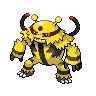

 英語版の図鑑説明
英語版の図鑑説明
Its evolution was induced by an unusual item, and its electrical output rises along with its heart rate. From its tails, it can unleash an electric current measuring 20,000 volts.
日本語訳
異常なアイテムで進化。心拍とともに電力が上昇し、尻尾から2万ボルトを放ちます。
 この図鑑文に出てくる英単語
この図鑑文に出てくる英単語
| 英単語 | 意味 | 品詞 | レベル |
|---|---|---|---|
| evolution | 進化 | 名詞 | 高校 |
| induced | 引き起こされた | 動詞 | 大学 |
| unusual | ふつうでない | 形容詞 | 高校 |
| electrical | 電気の | 形容詞 | 高校 |
| output | 出力 | 名詞 | 大学 |
| rate | 速さ、割合 | 名詞 | 高校 |
| unleash | 解き放つ | 動詞 | 大学 |
| volts | ボルト(複数形) | 名詞 | 大学 |
文法ポイント was induced by は受け身(受動態)の形で「〜によって…される」という意味です。
can unleash は「can + 動詞の原形」で「〜することができる」と能力を表します。
 英語名「Electivire」の由来
英語名「Electivire」の由来
英語名「Electivire」は、electric（電気の）、electricity（電気）、wire（電線）とlive wire（電気の通った電線）を組み合わせた名前と考えられている。フランス語の名前は「Élekable」で、électrique（電気の）、câble（ケーブル）から作られている。
出典 Bulbapedia
 エレキブルの種族値
エレキブルの種族値
HP75
こうげき123
ぼうぎょ67
とくこう95
とくぼう85
すばやさ95
合計 540
 エレキブルの英語名をシェア
エレキブルの英語名をシェア
「Electivire」の由来、友だちは知ってるかな？
 よくある質問
よくある質問
- エレキブルの英語名は？
- エレキブルの英語名は「Electivire」です。
- エレキブルの英語名「Electivire」の由来は？
- 英語名「Electivire」は、electric（電気の）、electricity（電気）、wire（電線）とlive wire（電気の通った電線）を組み合わせた名前と考えられている。フランス語の名前は「Élekable」で、électrique（電気の）、câble（ケーブル）から作られている。
- エレキブルは英語版の図鑑でどう説明されている？
- 「Its evolution was induced by an unusual item, and its electrical output rises along with its heart rate. From its tails, it can unleash an electric current measuring 20,000 volts.」と書かれています。日本語にすると「異常なアイテムで進化。心拍とともに電力が上昇し、尻尾から2万ボルトを放ちます。」という意味です。
エレキブルは第4世代（シンオウ地方）のポケモンです。第4世代（シンオウ地方）の英語名一覧 →